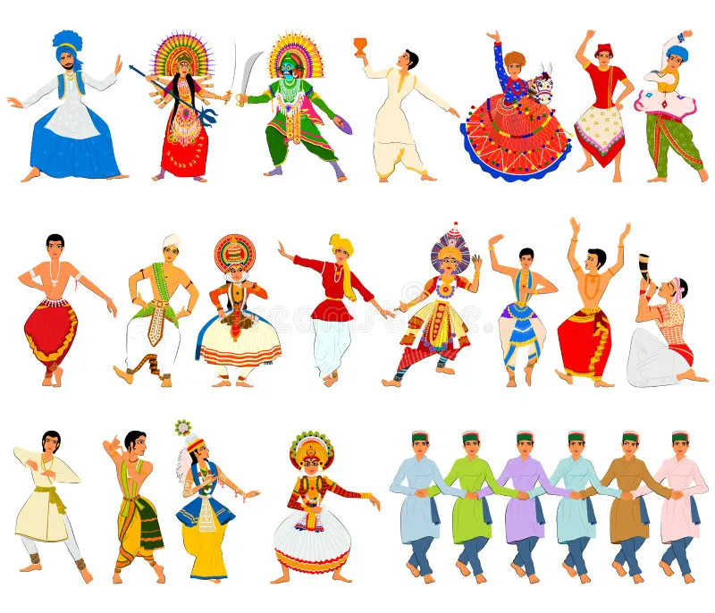
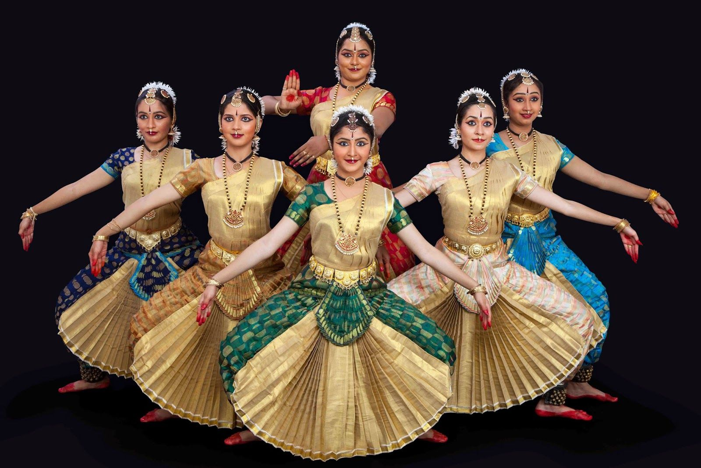
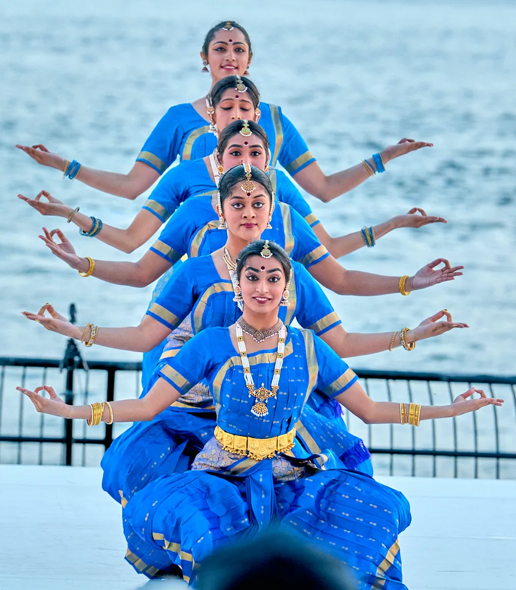
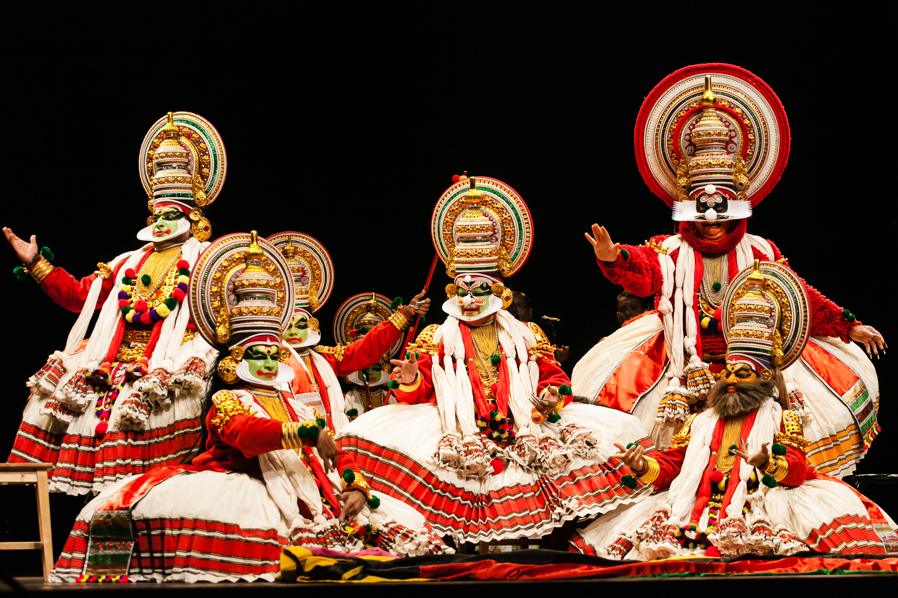

Dance
Dance is an art form consisting of sequences of body movements with aesthetic and often symbolic value,
either improvised or purposefully selected.Dance can be categorized and described by its
choreography, by its repertoire of movements or by its historical period or place of origin.
Dance is typically performed with musical accompaniment, and sometimes with the dancer simultaneously
using a musical instrument themselves.

Types of Dance
Bharathanatyam
Kuchipudi
Kathakali
Bharathanatyam
Bharatanatyam (Tamil: பரதநாட்டியம்) is an Indian classical dance form that originated in Tamil Nadu.
It is one of eight Indian classical dance forms recognized by the Sangeet Natak Akademi,
and expresses South Indian religious themes and spiritual ideas, particularly of Shaivism and
in general of Hinduism.

Kuchipudi
Kuchipudi (/kuːtʃiˈpuːdi/) (Telugu: కూచిపూడి నృత్యం) is one of the eight major Indian classical dances.
It originates from a village named Kuchipudi in the Indian state of Andhra Pradesh. Kuchipudi is a dance-drama performance,
with its roots in the ancient Hindu Sanskrit text of Natya Shastra.It developed as a religious art linked to traveling bards,
temples and spiritual beliefs, like all major classical dances of India

Kathakali
Kathakali ( IAST: Kathakaḷi Malayalam: കഥകളി pronunciationⓘ) is a major form of classical Indian dance.
It is a "story game" genre of art, but one distinguished by the elaborately colourful make-up and costumes of the traditional male actor-dancers.
It is native to the Malayalam-speaking southwestern region of Kerala and is almost entirely practiced and appreciated by Malayali people.
